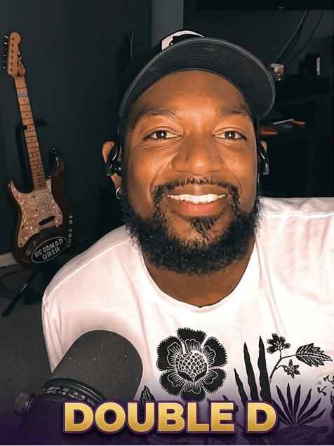
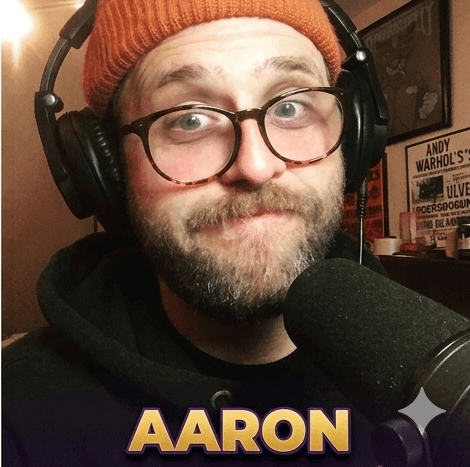
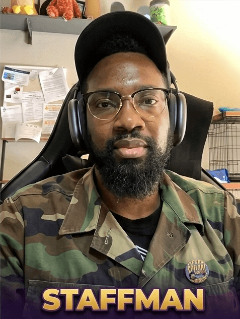

Three Detroit guys. One shared obsession with the culture that raised them. Zero filter.
After School Special Podcast was born out of a simple truth: three Detroit guys couldn't stop having the same conversation. Whether it was debating the greatest Jordan silhouette ever made, breaking down exactly why The Fresh Prince of Bel-Air was more than just a sitcom, or spiraling into the dark corners of Michigan history nobody was covering — the conversation never stopped. So they hit record.
What started as a living room experiment quickly grew into something bigger. Every week, Aaron, Double D, and Staffman show up with a topic, no script, and a shared philosophy: if it defined your childhood, shaped your city, or made you feel something — it's worth talking about. Throwback culture isn't nostalgia for nostalgia's sake. It's a lens for understanding where we came from and who we became.
Detroit has always been a city that moves at its own pace, builds its own culture, and doesn't wait for permission. After School Special is the same way — rooted in the city, made for anyone who grew up feeling like the culture they loved wasn't being covered the way it deserved. This is that show.

Three people responsible for your throwback-fueled commute every week.

Co-Host & The Architect
Double D is the strategic engine behind After School Special. He's the one who sees the bigger picture — connecting cultural dots across decades with an almost analytical precision that makes every topic feel like it was always heading somewhere important. His encyclopedic command of throwback entertainment isn't just trivia; it's framework. He's the reason the show has structure underneath the chaos, and the reason listeners keep coming back expecting to learn something they didn't know they needed.

Co-Host & The Storyteller
Aaron is the one who makes it personal. Every topic he touches gets layered with lived experience — the specific Detroit block, the specific year, the specific memory that makes a cultural moment feel real instead of just referenced. He never walks back a story, never softens a take, and has an almost supernatural ability to pull something from his own history that suddenly makes everyone else remember something they'd forgotten too. His presence on the show is what makes it feel less like a podcast and more like a conversation you wish you'd been there for.

Co-Host & Detroit's Ambassador
Staffman is Detroit personified. He carries the city's voice in every episode — its pride, its edge, its refusal to back down from anything. He's the crew's motor: the one who sets the tone, raises the stakes, and makes sure nobody gets comfortable. Whether he's defending an unpopular take on 90s hip-hop or breaking down why a specific Detroit moment mattered to the rest of the world before the rest of the world caught up, Staffman brings the kind of energy that makes you turn the volume up. He doesn't just represent the culture — he lives it out loud every single episode.